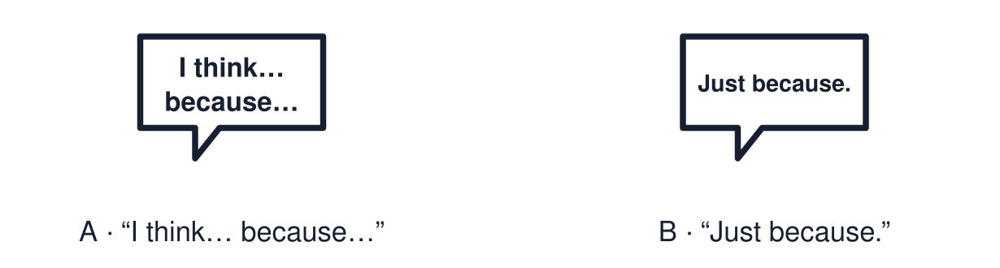

Arrival choices
Previous lesson reminder:

Start with 1 and 2. Try 3 and 4 when ready. Reading and exact scribing are available.
1 What does the red poppy stand for?
Support: Use the reminder strip or talk it through with an adult.
2 Which meaning fits big question?
Support: Choose: A question about life that has more than one answer OR Why you think something.
3 Which word joins an answer to its reason?
Support: Use the model evidence anchor C or read one relevant card together.
4 Does a big question have only one right answer?
Support: Give a reason when ready.
Stretch: use a precise example or explain which detail supports your answer.
Evidence cards
Read, point or listen. Keep the source label with any detail you use.
A Big questions
What makes something special? Why do people celebrate? What helps people feel hope? Big questions have more than one good answer.
Source: Authored classroom resource
Limit: These are three examples. There are many more big questions.
B A weak answer
“Things are special just because.” This gives a view but no reason.
Source: Authored classroom example
Limit: A weak answer can be improved. It is a starting point.
C A stronger answer
“I think an object is special when it reminds you of a person, because the memory matters more than the price.”
Source: Authored classroom example
Limit: A different view with a clear reason is just as strong.
D Different views
A person of faith might say light is special because it reminds them of God. A Humanist might say light is special because it brings people together. Both give a reason.
Source: Authored classroom resource
Limit: These are two examples. People within one worldview also differ.
Shared investigation
1. Decide whether each answer gives a reason.
2. Improve the weak answer together by adding “because”.
Work with a partner or adult, or use your own table. One person suggests; the other checks the evidence. Swap after one turn. Passing is allowed.
Move or match the cards
| Cards to use |
|---|
| “Light can mean hope because it helps people see in the dark.” |
| “I think festivals matter because they bring families together.” |
| “It just is.” |
Possible labels: Gives a reason / Needs a reason
Support: Show two choices. Read one short instruction. Point, match or say a word, then add a reason when ready.
Further challenge: Give a second view that is different from yours and the reason someone might hold it.
Supported independent task
Complete this route only. Give a simple response to a big question using one reason.
1. Choose one big-question card.
2. Choose an answer card from two or three options.
3. Point to or say the reason.
Support: Show two choices. Read one short instruction. Point, match or say a word, then add a reason when ready. Complete the organiser one space at a time. I think ___ because ___.
An adult may read or scribe your exact response. They should not choose the answer.
Standard independent task
Complete this route only. Give a simple response to a big question using one reason.
1. Choose one big question.
2. Answer using: I think ___ because ___.
3. Check that your reason follows “because”.
Support: I think ___ because ___.
Check the required evidence and revise one detail.
Stretch independent task
Complete this route only. Give a simple response to a big question using one reason.
1. Answer a big question with a reason.
2. Add a different view and the reason behind it.
3. Say which reason you find stronger and why.
Support: Choose the evidence independently. Use the frame only if it helps.
Give a second view that is different from yours and the reason someone might hold it.
Exit ticket
Choose a response mode. You may give your answers privately to an adult.
Which word joins an answer to its reason?
Does a big question have only one right answer?
Support: I think ___ because ___.
Further challenge: Give a second view that is different from yours and the reason someone might hold it.